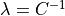
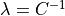

FAQ¶
Here we summarize some answers to questions that came up by users when deploying Snap ML for diverse applications.
Should I preprocess the training data before training?¶
Yes for better performance you should do feature normalization on your data. You can use the sklearn functionality to do this and do not forget to apply the same preprocessing to the test data before prediction.
>>> from sklearn.preprocessing import normalize
>>> data_normalized = normalize(data, axis=1, norm='l1')
How many iterations should I perform?¶
This is very application specific. You want to use enough iterations shuch that you model converges. To detect if your model has already converged you can enable the verbose mode and print the evolution of the training cost. If it reaches a stable value your model has converged.
Should I use the same number of iterations with or without GPUs?¶
No, if you enable GPU acceleration ( use_gpu=true ) you need more iterations to reach a certain training accuracy than if you train only using CPUs. The resaon is the asynchronous solver used in the GPU which requires more conservative – and thus more – updates than the sequential CPU solver.
How should I choose the number of threads in the GPU implementation?¶
The number of threads ( n_threads ) determines the parallelism used to evaluate a single coordinate update. This involves an inner product computation between the shared vector and an individual column of the data matrix. Thus, for dense data or long shared vectors n_threads should also be chosen larger.
Should I use the primal or the dual solver?¶
For models where both solvers are available the optimal choice of the solver depends of the dimensionality of the training dataset. In general, we recommend to use the dual solver if the number of examples in your training dataset is larger than the number of features and other wise use the primal solver. However you need to be aware that when using the primal solver you need to transpose the data first.
How do I compare to sklearn?¶
The user needs to be aware that the regularization parameter in sklearn is defined differently for the individual models – the mapping can be derived from the equations of the objective which are stated in the Snap ML manual and here for sklearn. For most classification tasks a regularization parameter  is used in sklearn which is equivalent to  used in Snap ML. For most regression tasks sklearn uses an
is used in sklearn which is equivalent to  used in Snap ML. For most regression tasks sklearn uses an  regularization parameter which is equivalent to using for Ridge Regression and scaled as for Lasso.
regularization parameter which is equivalent to using for Ridge Regression and scaled as for Lasso.
Why is it not possible to use the dual solver for Lasso?¶
The regularization term in Lasso objective is non-smooth. Thus the primal-dual mapping is not well defined for this problem.